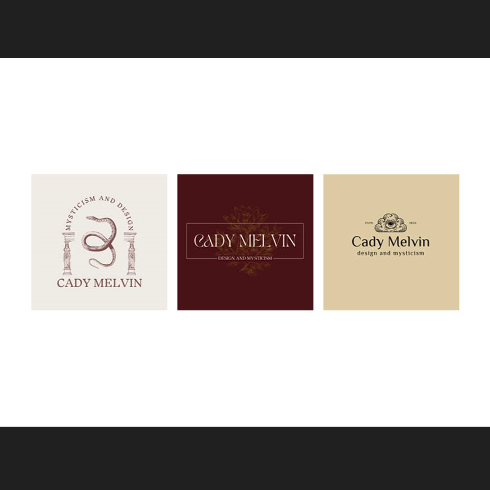
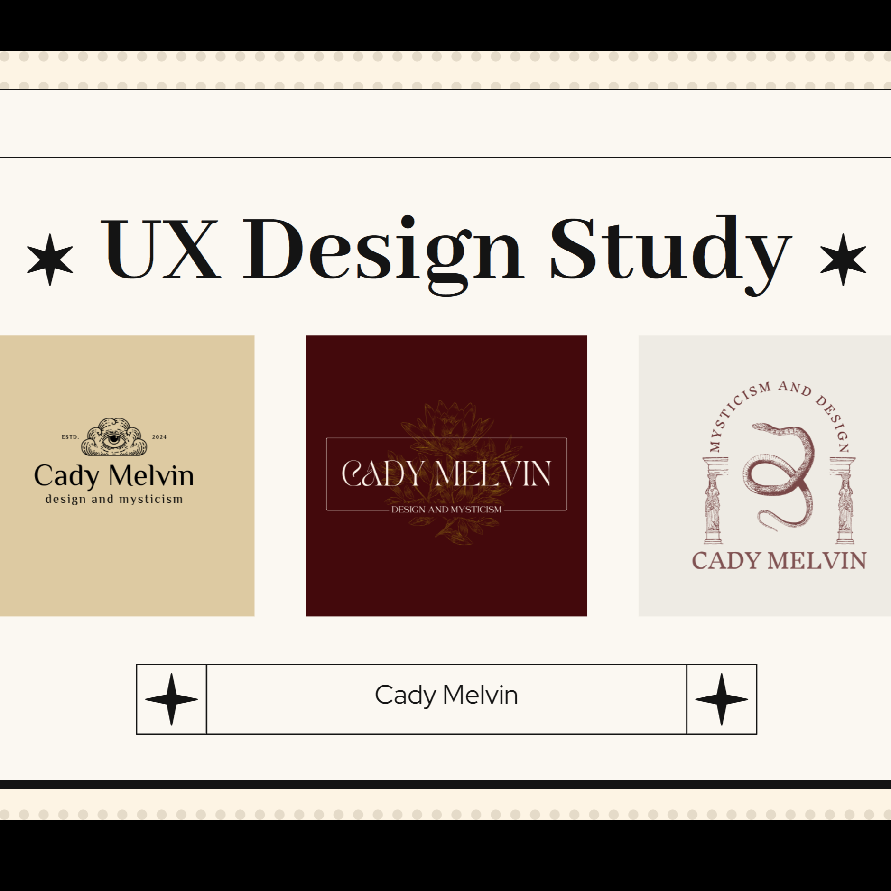
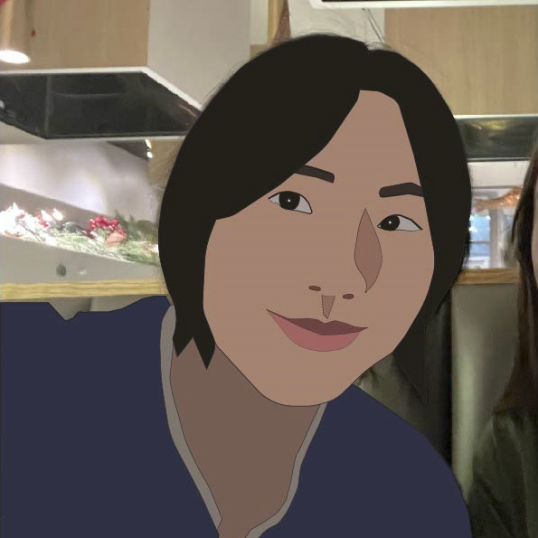
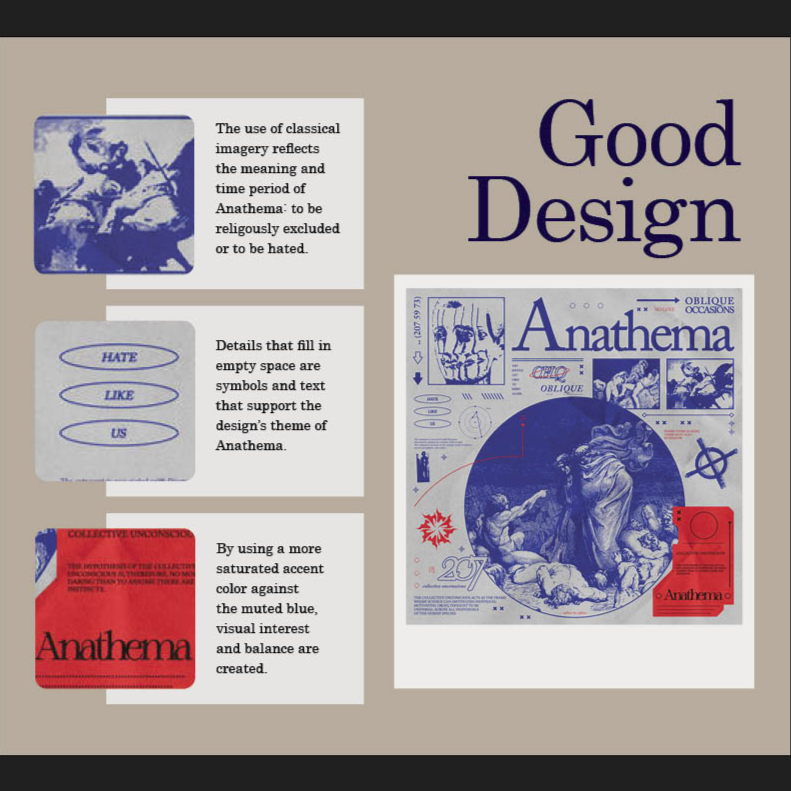

Design Beginnings
Design Fuego

Using Design Fuego and VS Code to create an introductory slideshow explaining who I am and what my relationship to design is.
Logo A/B/C

Through Canva and Adobe's free logo maker, I created 3 logo's that relate to a fake brand that represents me.
UX Testing Logo Project

Through interviews, I found out which logo appealed most to my respondents. This allowed me to better understand design from a users/viewers perspective when intgeracting with it.
Cartoon Portrait

With Adobe Illustrator I traced a photo of me with the pen tool. The result is a cartoon-like potrait of myself.
Good Design

To analyze what makes a design good, I found an album cover that I appreciated. In InDesign, I created a graphic that highlighted certain aspects of the chosen design.